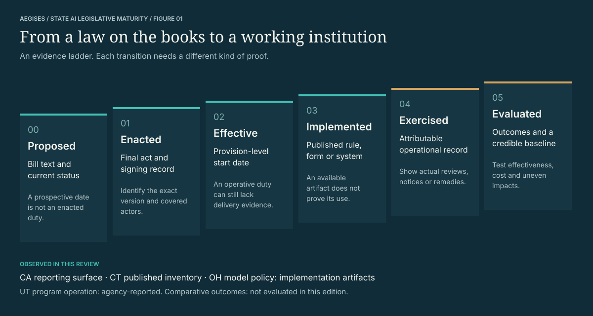
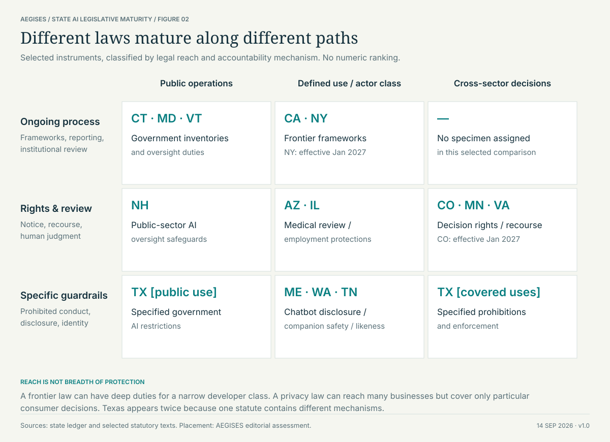
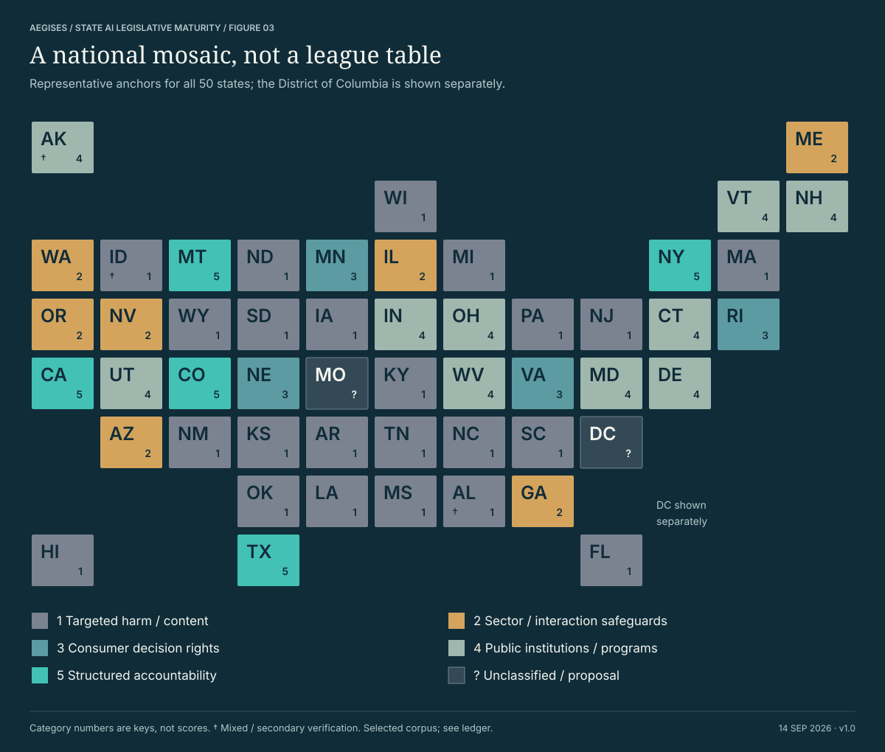
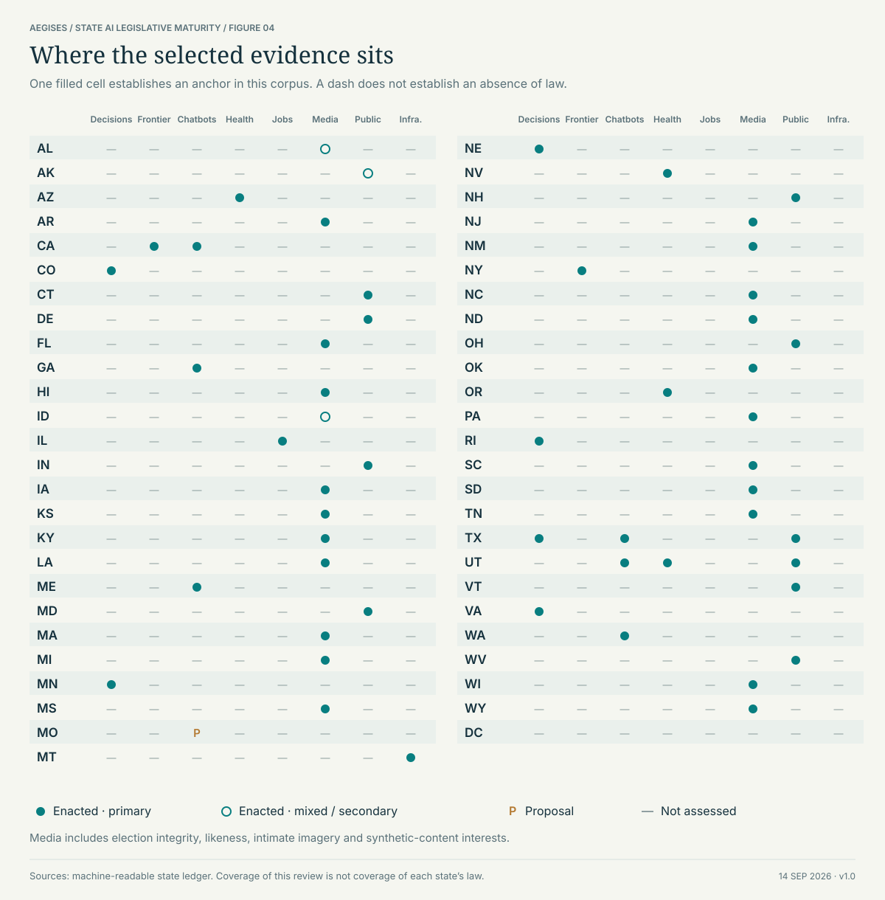
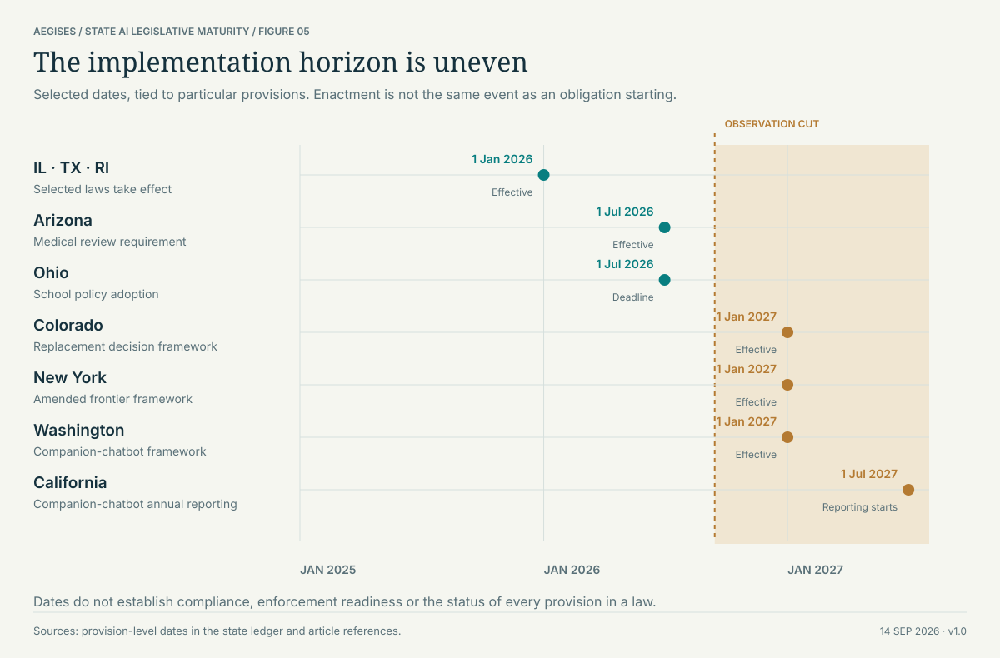
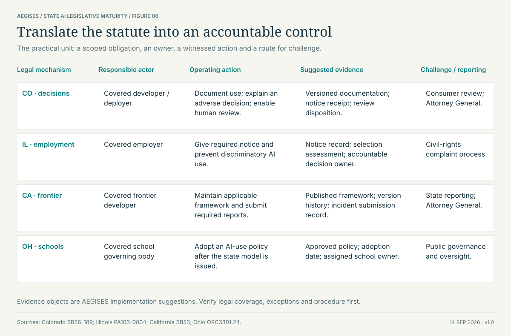

There is more than one route.
Decision rights, frontier-model duties, sector safeguards, public institutions and targeted harm protections solve different problems. Their scope and accountability structures should be compared explicitly.
STATE AI LEGISLATIVE MATURITY ATLAS
RESEARCH EDITION 1.0The maturity of AI legislation
across the United States.
American AI law is developing through distinct legal pathways. The consequential question is how a statute becomes an accountable institution.
An original AEGISES analysis of selected legislative anchors across the 50 states, with the District of Columbia shown separately.
Read the findingsA state can legislate extensively while the institutions needed to implement its laws remain untested. Another can create a narrow, enforceable protection through an existing legal system. A useful maturity assessment must preserve both possibilities.
This atlas separates legislative architecture—who must do what, under which conditions—from implementation evidence and demonstrated outcomes. It examines mechanisms rather than awarding states a single composite score.
Decision rights, frontier-model duties, sector safeguards, public institutions and targeted harm protections solve different problems. Their scope and accountability structures should be compared explicitly.
Colorado’s 2026 replacement and New York’s 2026 amendment materially change the baseline. Both have central requirements beginning January 1, 2027. An older legislative snapshot can misstate present obligations. [CO] [NY]
California’s reporting surface, Connecticut’s published inventory and Ohio’s model policy demonstrate identifiable implementation artifacts. They do not establish universal compliance or reduced harm. [CA] [CT] [OH]
We define institutional maturity as the extent to which a legal mechanism has an identifiable scope, accountable actors, an executable procedure and evidence that the procedure works. Each part requires a different observation.
A bill establishes an intention. An enacted act establishes legal authority. An effective provision creates an operative requirement. Published rules and systems show implementation work. Actual decisions and remedies show use. Credible evaluation is needed to establish results.

The highest evidenced stage belongs to a named mechanism, at a stated time.
These stages can overlap. Agencies may build a reporting system before a law takes effect. Courts may apply an existing remedy before an AI-specific statute exists. A later amendment can reset an implementation plan. The ladder therefore identifies the evidence needed to support a claim; it does not assume every jurisdiction moves through a uniform sequence.
For California’s frontier framework, the Cal OES reporting page supports a claim that a public reporting surface exists. It does not show that we submitted an incident, that a regulator processed one correctly, or that the regime prevented a catastrophe. Connecticut’s published 2023 inventory establishes an inventory artifact, not the completeness of every subsequent annual inventory. Ohio’s released model policy establishes a state deliverable, not adoption by every covered school body. [Implementation sources]
Utah provides a different kind of observation: its AI policy office describes a bounded prescription-renewal program. That is an agency account of operation under a regulatory arrangement. The office’s account is not an independent clinical evaluation, and this paper does not infer one. [UT]
An evaluated regime need not be more restrictive. Evaluation may justify narrowing a rule, changing an exemption or discontinuing an ineffective intervention. Maturity concerns the quality of institutional learning and accountability; it is not a proxy for the number of prohibitions, the severity of penalties or the volume of legislative activity.
The landscape uses two categorical dimensions: legal reach and accountability mechanism. It borrows the clarity of an analyst matrix while avoiding fabricated precision and a universal “leader” quadrant.
Each placement is an editorial interpretation of a selected instrument. Moving upward means a different kind of accountability architecture, not demonstrated superior performance.

Election impersonation, intimate imagery, child exploitation and likeness protections attach legal consequences to particular conduct. Tennessee’s voice-and-likeness route illustrates why AI governance cannot be reduced to model regulation. Such laws may use established enforcement institutions, but their existence does not establish general developer or deployer accountability. [TN]
Illinois addresses AI use within employment civil rights. Arizona protects medical review in insurance decisions through a technology-neutral rule. Maine regulates misleading chatbot interactions. Nevada draws a professional-care boundary for certain AI uses. These are different legal triggers, even when a single product could encounter several of them. [IL] [AZ] [ME] [NV]
Privacy statutes can govern profiling without using an AI-specific architecture. Minnesota, Nebraska, Rhode Island and Virginia supply selected examples of consumer rights or assessment duties. Coverage thresholds, exemptions and the distinction between consumer and employment contexts prevent these provisions from being read as universal rights over all automated decisions. [MN] [NE] [RI] [VA]
Inventories, oversight offices, public-use policies and regulatory programs build a government’s capacity to understand and govern AI. Their first deliverable may be institutional knowledge rather than a new private-sector restriction. A commission’s creation should therefore be recorded separately from its recommendations, adopted rules and observed effects. [DE] [MD] [VT]
California and New York focus on frontier developers; Colorado addresses covered automated decisions; Texas combines specified prohibitions with enforcement and a sandbox; Montana couples computing protections with a critical-infrastructure risk-management trigger. These instruments organize continuing responsibilities, but their target populations and legal standards differ substantially. The category is a family of architectures, not a claim of equivalence. [CA] [NY] [CO] [TX] [MT]
The map gives every state equal visual weight. Its categories describe the representative instruments in the accompanying ledger. They do not claim to identify a state’s dominant pathway or the strongest provision anywhere in its legal portfolio.
For example, a state shown under targeted harm may also have important privacy or public-sector legislation. The matrix makes the selected domains visible, allowing readers to distinguish the geography of this evidence from a complete geography of law.


Evidence coverage is not legislative coverage.
The matrix uses eight practical domains: consequential decisions and profiling, frontier systems, chatbot interactions, health, employment, media, public operations and critical infrastructure. These are analytical groupings, not standardized statutory definitions. Media includes several legally distinct concerns, from election integrity to likeness and sexual-exploitation material.
A filled cell indicates an enacted anchor supported by a primary source. An open circle indicates mixed or secondary verification. A “P” indicates the selected proposal. A dash records an unassessed domain. Multiple cells for a state reflect the scope of the selected instrument or explicitly included companion law; they do not measure the number of statutes.
This design deliberately avoids a misleading negative inference. A complete claim that a state lacks a particular safeguard would require a systematic search of statutes, session laws, regulations and relevant amendments, including technology-neutral law. This edition does not make that claim.
An enactment date, a provision’s effective date, an agency deadline and a first reporting date answer different questions. The timeline preserves those distinctions and marks the research observation date.
The chart is a selected planning horizon, not a complete compliance calendar. A plotted milestone does not establish that every prerequisite rule or institution is ready.

SB26-189 repeals and reenacts the earlier framework. Its central developer and deployer requirements begin January 1, 2027. Preparing only against the original SB24-205 design risks implementing the wrong obligations. [CO]
The 2026 amendment to the RAISE framework establishes the January 1, 2027 effective date used here. The original 2025 signing announcement cannot by itself establish the amended law’s current timetable. [NY]
The July 1, 2027 marker concerns the start of annual companion-chatbot reporting under SB243. It is not presented as the effective date of California’s entire chatbot or frontier-model regime. [CA]
For an operator, the useful unit is an obligation attached to a covered actor and a concrete event. “We comply with state AI law” is too coarse to guide system design or to support an auditable claim.
The diagram translates four legal mechanisms into possible operating controls. The evidence objects are AEGISES design suggestions; they are not additional duties imposed by the cited laws.

Connect authority, action, evidence and recourse.
Begin with coverage: actor, affected person, jurisdiction, use, threshold, exception and date. Assign a responsible owner to each applicable obligation. Connect the owner to the decision point where the duty arises, then retain proportionate evidence that the required action occurred. A notice template and a delivered notice are different objects; a human-review policy and a completed review are different events.
Design that evidence without treating every interaction as a reason to collect more personal data. The record should establish the relevant action and authority while respecting retention limits and privacy duties. An operational system should also distinguish unresolved applicability from confirmed non-applicability; an empty field should not silently become an exemption.
Specify the institution as carefully as the prohibition. Who receives a report? Who has authority to investigate? What information must be retained, and for how long? What happens when a person challenges a decision? Which public deliverable will reveal whether the mechanism is operating? These questions connect the legal text to an implementable procedure.
Publish artifacts that allow external scrutiny: rules, forms, inventories, reasoned guidance and appropriately protected performance summaries. Pair counts with denominators and interpretation. A rise in complaints may reflect greater harm, better access to redress or greater awareness. A low incident count may reflect safety, underreporting or a narrow reporting definition.
The next defensible step is a mechanism-level panel: the same legal triggers followed over time, with versioned sources and comparable observations. A credible outcomes study would examine response times, access to correction, review reversals, reporting quality, implementation cost and distributional effects. This paper proposes those measures; it does not claim to have measured them.
There is no sound shortcut from bill volume to institutional effectiveness. The research program should reward accurate scope, attributable delivery and the ability to revise a failing intervention. That is the sense in which AI legislative maturity can become an empirical question.
Every entry identifies the selected instrument, a narrow supported observation, the verification basis and a boundary on interpretation. Source links lead to legislatures, statutes or responsible public institutions wherever available.
“Enacted” describes the selected instrument. It does not mean all its provisions are already effective. Dates and unassessed implementation are stated separately.
No entries match. Change the search or reset the filters.
Deceptive election media: disclosure and remedies in the enrolled measure.
Boundary. Enactment cross-checked against NCSL; enrolled text alone is not proof of signature.
Implementation evidence: not assessed.
Budget legislation includes state AI planning and project provisions.
Boundary. Official history confirms enactment; AI scope is identified by NCSL. Spending and delivery were not audited.
Implementation evidence: not assessed.
Medical-necessity denials require independent medical-director review rather than sole reliance on recommendations.
Boundary. A technology-neutral insurance safeguard; applies from July 1, 2026. Not a general AI law.
Implementation evidence: not assessed.
Allocates specified ownership interests associated with AI output and training, including employment circumstances.
Boundary. State-law allocation does not establish federal copyright eligibility or eliminate existing rights.
Implementation evidence: not assessed.
Frontier-model risk frameworks and incident reporting; a separate companion-chatbot law addresses disclosure and user safeguards.
Boundary. Different laws, covered entities and thresholds. An official reporting portal is an implementation artifact, not demonstrated risk reduction.
Implementation evidence: public artifact observed; effectiveness not assessed.
The replacement automated-decision framework assigns documentation, notice, correction and meaningful human-review duties.
Boundary. Core requirements begin January 1, 2027. The earlier SB24-205 regime is not the current implementation baseline.
Implementation evidence: not assessed.
Annual state-agency AI inventory and ongoing assessment duties.
Boundary. This entry assesses the 2023 public-sector mechanism. The complete effect of PA26-15 is outside this edition's assessed corpus.
Implementation evidence: public artifact observed; effectiveness not assessed.
Creates an AI commission with inventory and recommendation responsibilities.
Boundary. A legislative institution is not proof that private-sector controls or recommendations have been implemented.
Implementation evidence: not assessed.
Requires disclaimers for covered political advertising using generated media.
Boundary. Election-specific scope and statutory intent conditions; effective July 1, 2024.
Implementation evidence: not assessed.
Signed legislation addresses conversational AI interactions with minors and crisis-resource access.
Boundary. Official Senate signing account supports this narrow description; provision-level effective dates were not independently resolved here.
Implementation evidence: not assessed.
Addresses materially deceptive campaign media with disclosure exceptions.
Boundary. Election-period and media-format conditions matter; not a general synthetic-content prohibition.
Implementation evidence: not assessed.
The FAIR Elections Act addresses deceptive generated election media.
Boundary. Secondary-source verification only: the legislature's website was inaccessible to this review. Not included in primary-only comparisons.
Implementation evidence: not assessed.
Extends employment civil-rights protections to discriminatory AI use and requires notice.
Boundary. Effective January 1, 2026. Rulemaking and employer compliance were not audited.
Implementation evidence: not assessed.
Creates public AI governance arrangements, including standards for voluntary public-entity inventories.
Boundary. The inventory submission provision is permissive. Its July 1, 2025 start does not make all inventories mandatory.
Implementation evidence: not assessed.
Addresses dissemination of altered explicit depictions as harassment.
Boundary. A targeted likeness safeguard; not a general model-development or deployment framework.
Implementation evidence: not assessed.
Signed legislation addresses AI-generated sexual depictions and related privacy harms.
Boundary. Offense-specific scope; enactment does not establish implementation or enforcement outcomes.
Implementation evidence: not assessed.
Extends protections concerning sexual depictions of minors to specified computer-generated material.
Boundary. This selected criminal-law anchor does not represent Kentucky's full privacy or AI portfolio.
Implementation evidence: not assessed.
Addresses nonconsensual AI-generated nude images.
Boundary. The selected offense has particular knowledge, consent and depiction elements; no general AI maturity score is inferred.
Implementation evidence: not assessed.
Requires disclosures for consumer-facing chatbots where users could be misled into believing they are interacting with a human.
Boundary. A consumer transparency mechanism, not a general audit or risk-management obligation.
Implementation evidence: not assessed.
Directs public-sector AI inventories, policies and assessment arrangements.
Boundary. Applies to state governance; this record does not characterize Maryland's separate consumer privacy regime.
Implementation evidence: not assessed.
Extends protections against image-based abuse; state guidance addresses student deepfake incidents.
Boundary. The selected legislation and 2026 school guidance are distinct evidence objects; guidance is not evidence of universal school compliance.
Implementation evidence: public artifact observed; effectiveness not assessed.
Regulates specified deceptive election media, as explained in the Attorney General's 2026 voter-protection guidance.
Boundary. Campaign context, timing and statutory exceptions limit applicability.
Implementation evidence: not assessed.
Provides covered consumers with profiling-related rights, including information and review-related protections.
Boundary. Consumer privacy thresholds and exemptions apply. This is not a universal right governing every AI decision.
Implementation evidence: not assessed.
Addresses deceptive election digitizations within a specified pre-election window.
Boundary. Effective July 1, 2024; this entry uses the legislature's enacted-bill summary.
Implementation evidence: not assessed.
The official record shows a committee do-pass status for an AI online-content proposal.
Boundary. No enactment is established for this instrument. The displayed prospective effective date is not evidence that it became law.
Implementation evidence: not assessed.
Combines computing protections with risk-management provisions for AI controlling critical infrastructure.
Boundary. Narrow infrastructure trigger. The final law should not be described as containing the proposal's discarded shutdown requirement.
Implementation evidence: not assessed.
Requires data-protection assessments for covered high-risk processing, including specified profiling.
Boundary. A consumer privacy mechanism with thresholds and exemptions, not an AI-only statute.
Implementation evidence: not assessed.
Restricts licensed mental- and behavioral-health providers' use of AI to deliver direct care, with administrative exceptions.
Boundary. A professional-care boundary; does not prohibit every AI use in health services.
Implementation evidence: not assessed.
Addresses state-government AI use, transparency and human oversight.
Boundary. Public-sector scope; it should not be presented as a private-sector omnibus regime.
Implementation evidence: not assessed.
Creates targeted civil and criminal protections involving deceptive generated media.
Boundary. Specific injury, conduct and intent elements matter; publication of synthetic media is not uniformly unlawful.
Implementation evidence: not assessed.
Adds campaign disclosure requirements for covered AI-generated media.
Boundary. Election safeguards do not establish general AI-provider accountability duties.
Implementation evidence: not assessed.
The amended RAISE framework addresses frontier-model safety and regulatory accountability.
Boundary. Effective January 1, 2027. The 2026 amendment controls this edition's date treatment.
Implementation evidence: not assessed.
Existing law covers specified AI-generated private images and sexual-exploitation material.
Boundary. The cited legislative analysis describes existing law separately from H934's proposed changes; only its current-law discussion supports this entry.
Implementation evidence: not assessed.
Requires identification of covered AI impersonation in political communications.
Boundary. Campaign-specific trigger. Routine text assistance should not be conflated with covered impersonation.
Implementation evidence: not assessed.
Requires a state model AI policy and school-system adoption of AI-use policies by July 1, 2026.
Boundary. The model policy is publicly available; local adoption and policy effectiveness were not audited.
Implementation evidence: public artifact observed; effectiveness not assessed.
Signed legislation extends protections against nonconsensual intimate imagery to AI-generated material.
Boundary. Targeted criminal-law protection; not evidence of a comprehensive AI accountability system.
Implementation evidence: not assessed.
Restricts nonhuman AI use of protected nursing titles.
Boundary. A professional-title rule. The cited code edition does not incorporate all 2026 session changes.
Implementation evidence: not assessed.
Updates child-sexual-abuse depiction provisions to address specified synthetic material.
Boundary. The selected criminal statute is not a full account of state AI legislation or administrative use.
Implementation evidence: not assessed.
Requires assessments for covered high-risk processing, including specified profiling.
Boundary. Effective January 1, 2026; consumer-data scope and exemptions apply.
Implementation evidence: not assessed.
Signed legislation addresses unauthorized intimate-image disclosure, including AI-generated depictions.
Boundary. May 12, 2025 signature and May 29 ceremonial event are distinct dates.
Implementation evidence: not assessed.
Extends child-sexual-abuse material definitions to specified AI-generated depictions.
Boundary. Depiction and offense elements constrain scope; not a general ban on generative AI.
Implementation evidence: not assessed.
Protects voice and likeness interests against specified AI-related misuse.
Boundary. Publicity and likeness rights operate differently from model-safety regulation.
Implementation evidence: not assessed.
Sets prohibited uses, specified disclosure duties and an enforcement and sandbox structure.
Boundary. Effective January 1, 2026. The enacted discrimination standard is intentional conduct, not a general disparate-impact test.
Implementation evidence: not assessed.
An AI policy office and regulatory-mitigation program coexist with disclosure and mental-health chatbot safeguards.
Boundary. The office describes a bounded prescription-renewal pilot. Agency-reported operation is not independent validation of clinical safety.
Implementation evidence: agency reports bounded program operation; outcomes not independently assessed.
Assigns public AI review, inventory and reporting responsibilities to a state division.
Boundary. Institutional duties are assessed here; performance of every mandated review is not established.
Implementation evidence: not assessed.
Gives covered consumers profiling opt-out rights and an appeal process for rights requests.
Boundary. Consumer privacy coverage and exemptions apply; this is not an omnibus AI-specific assessment.
Implementation evidence: not assessed.
Enacts a companion-chatbot regulatory framework.
Boundary. Signed March 24, 2026; effective January 1, 2027. Enacted and effective are visibly separated in this atlas.
Implementation evidence: not assessed.
Establishes a state AI task force and governance responsibilities.
Boundary. This institutional anchor does not imply that every recommendation has become a binding rule.
Implementation evidence: not assessed.
Requires AI disclosures in covered political advertising.
Boundary. Official Ethics Commission implementation material; effective March 23, 2024. The review does not assess enforcement outcomes.
Implementation evidence: public artifact observed; effectiveness not assessed.
Addresses AI-enabled harms involving minors, with specified criminal and developer-liability provisions.
Boundary. Effective July 1, 2026. Particular knowledge and intent conditions matter.
Implementation evidence: not assessed.
Included separately from the 50 states; legislative classification remains unassessed.
Boundary. This is a research gap, not a finding that the District has no applicable law.
Implementation evidence: not assessed.
This is a qualitative research edition with a representative legislative corpus. It is designed for inspection and correction, not numerical certainty.
Observation date: September 14, 2026. Relevant older laws remain in scope. A recent observation date does not mean every underlying code publication has incorporated every 2026 amendment.
The primary unit is a named legislative instrument or codified mechanism. The geographic ledger contains all 50 states and DC. Map categories characterize selected anchors, not entire state portfolios. No composite index, percentile or weighted state score is calculated.
NCSL trackers and targeted searches supplied discovery leads. The review then consulted enacted text, official histories, codified provisions and official implementation materials. Some entries use official summaries rather than full provision-by-provision analysis. Source type is explicit. [Discovery sources]
Proposals are not counted as enacted law. The timeline uses selected provision-level dates. Missouri’s displayed prospective effective date is not treated as proof of enactment. The Colorado and New York comparisons incorporate the identified 2026 replacement or amendment.
Pathways and landscape positions are AEGISES analytical judgments grounded in the cited mechanisms. Category numbers are labels, not ordinal scores. “Structured accountability” denotes organized responsibilities; it does not certify implementation, comprehensiveness or effectiveness.
This is not an exhaustive census of 2026 enactments. It does not comprehensively reconcile every amendment, regulation, court challenge, enforcement action or federal interaction. The Connecticut entry assesses its 2023 public-sector mechanism; its full 2026 legislative package is not assessed. DC is a research gap.
Implementation examples are deliberately bounded. Public availability is not operational qualification. Agency reports are attributed as such. Comparative outcomes, causal effects and compliance costs were not evaluated. A lack of such evidence in this paper is not proof that none exists.
Original analysis.
Inspectable sources.
No implied endorsement.
The diagrams are original AEGISES work, using an analyst-style visual framework. They are not Gartner research and are not affiliated with or endorsed by Gartner. Research and production were AI-assisted. This edition does not claim independent peer review.
The paper is a policy and systems analysis, not a determination that a particular deployment complies with applicable law. General privacy, civil-rights, consumer-protection and professional duties may apply even where this corpus contains no AI-specific anchor. Federal and local regimes require separate analysis.
For updates, preserve the instrument identity, exact source, changed provision and observation date. Replacing a record without retaining its prior basis would make longitudinal maturity claims difficult to audit.
NCSL AI legislation database; NCSL 2025 legislation snapshot; NCSL 2024 legislation snapshot. Historical snapshot totals are not presented as current national totals. NCSL's database is not reproduced here; the ledger and interpretations are independently prepared.
THE RESEARCH, OPEN TO INSPECTION
Vector figures retain sharp labels at publication size.
The ledger is available in human- and machine-readable form.
{kind=link}
{kind=link}
{kind=link}
{kind=link}
{kind=link}
{kind=link}